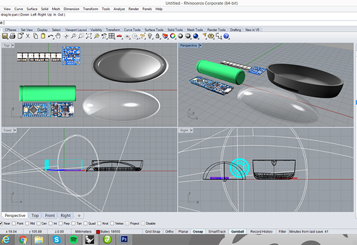
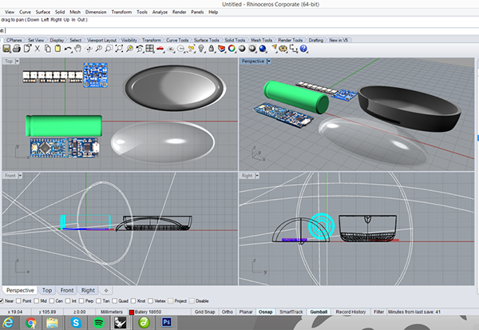
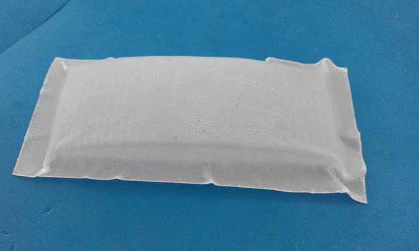
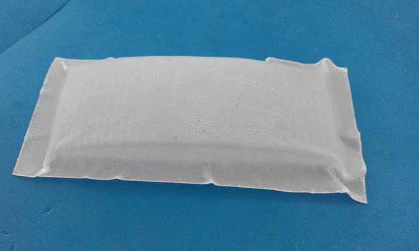
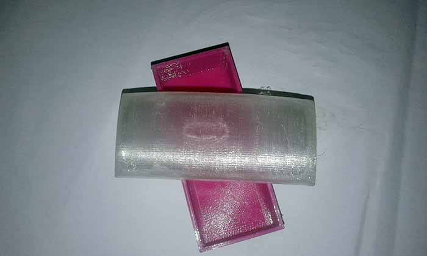
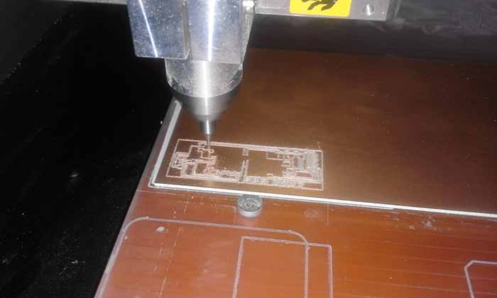

Final Project
Final Project Development
Finding the right form and shape wasn't as easy as it might sound.
I starter by drawing by and what i thought I want my brake light to look like.
Then week two came and i used the assignment to make a 3d model of my light.
At this point i already had an idea of the electronic components tha I want to use on my
prototype so I started by designing the components
that i will use in the brake light to try to understand how can i fit them together.
And the bloks in order and design a possible box for the components, trying find the right shape and size.
 

But I was still not happy with my brake light case, and in the molding and casting and composites assignments
I thought i might make two alternatives for the cover for my brake light,
one in plastic and the other one with fiberglass and resin.
In order to make my molds I modeled another case alternative.
I used the same method but the result was a diferent shape.
 

But I ended up 3Dprinting it :P

Prototyping
So now we are very close to the final project presentation and all i have done so far is the idea
for the project and how the brake light should look like. The idea has changed a little bit from the first week.
I decided to start with the electronics because that is definitely the hardest part for me. So first and before designing the circuit board,
i connected the accelerometer and the leds to an arduino and programed them to work together.
This part happened in tree different moments:
1. Arduino and LED's
At firs I thought that I would like to use NeoPixel because they allow numerous colors and by being controlled
individually by one pin allows also the creation of animations with the LEDs. But after I've implemented the code in arduino I
found that it was more difficult to control this kind of LED and since we managed to make our animation through other methods (by blinking)we chose to do this with the normal red LEDs.
2. Arduino and Accelerometer
The accelerometer that I used was the ADXL335. I choosed this one just because we already had one module of this
accelerometer here in the lab and because beeing an analog accelerometer the output is a continuous voltage that is
proportional to acceleration for each axis for the propouse of my final project it's the simpliest solution.
3. Power the Circuit
Lastly, was the time to find a way to power the circuit. To do that i used a 18650 rechargeable lithium battery from an
old laptop battery, so it's a protected-cell and a high density battery. To charge it I choose a BMS (battery management system),
the BMS manages a rechargeable battery by protecting the batery and preventing it from operating outside its safe operating area:
Over-current, Over-voltage, Under-voltage
1st Prototype
Next step was to design the board, I knew i wanted a board with a Led strip, accelerometer,:
Milling the board:

Stuffing: